Gestión integral
Centraliza la administración de procesos, riesgos y cumplimiento en una plataforma única y eficiente.
La solución todo en uno para gestionar procesos, minimizar riesgos y garantizar el cumplimiento normativo, asegurando la eficiencia y el éxito de tu organización.
Eliminamos ineficiencias, reducimos riesgos y aseguramos el cumplimiento normativo con herramientas que se adaptan a las necesidades únicas de tu negocio.
Centraliza la administración de procesos, riesgos y cumplimiento en una plataforma única y eficiente.
Cumple con normativas internacionales como ISO, GDPR y más, sin complicaciones.
Diseñado para crecer con tu empresa, adaptándose a tus necesidades actuales y futuras.
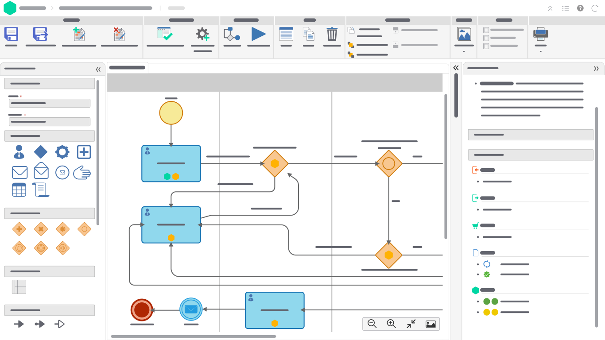
Modela, automatiza y mejora tus procesos de negocio con notación BPMN, flujos de trabajo configurables e indicadores de desempeño, todo en una sola plataforma.
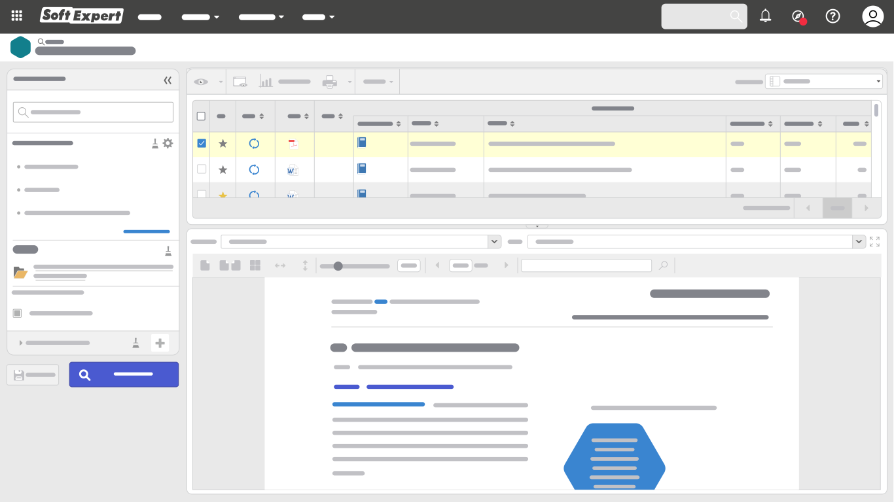
Moderniza tu sistema de gestión de calidad con SoftExpert, garantiza el cumplimiento y promueve la mejora continua.
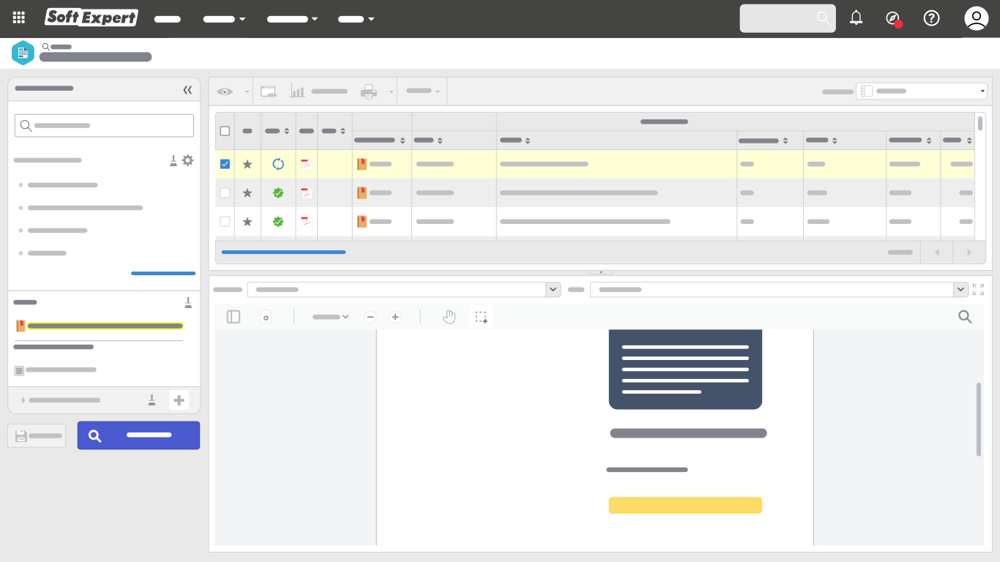
Crea, captura, gestiona, almacena, preserva y comparte documentos y registros, reduciendo el papeleo y las desviaciones. Garantiza seguridad, integridad, confiabilidad y cumplimiento con estándares como ISO 9001 y FDA 21 CFR Parte 11.
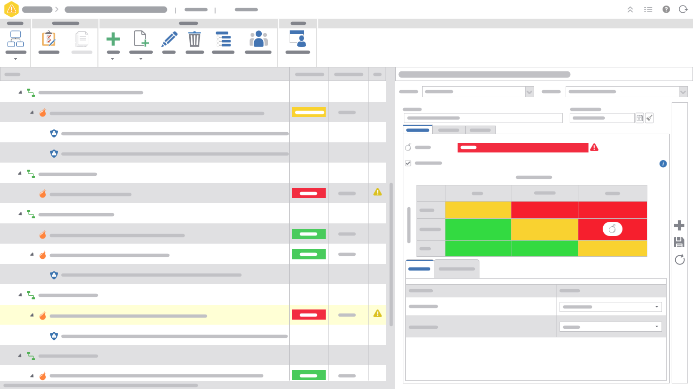
Garantiza el cumplimiento de las políticas corporativas, leyes y reglamentos externos con una plataforma que integra la ejecución de la estrategia de negocio con las prácticas de gestión de riesgos.
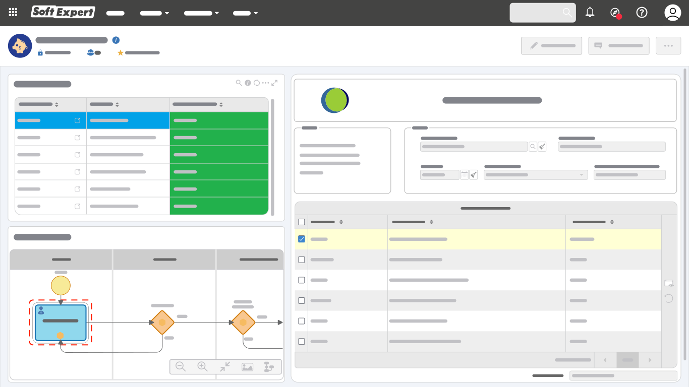
Mejora el control y la evaluación de tus proveedores, desde su identificación y calificación inicial hasta el monitoreo de desempeño y la racionalización de la base, con una interfaz intuitiva y fácil de usar.
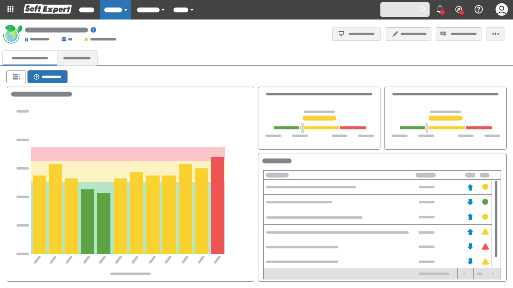
Estructura los procesos y las políticas para gestionar y hacer un seguimiento eficaz de todas las iniciativas e indicadores ESG de tu organización, en una plataforma integrada.
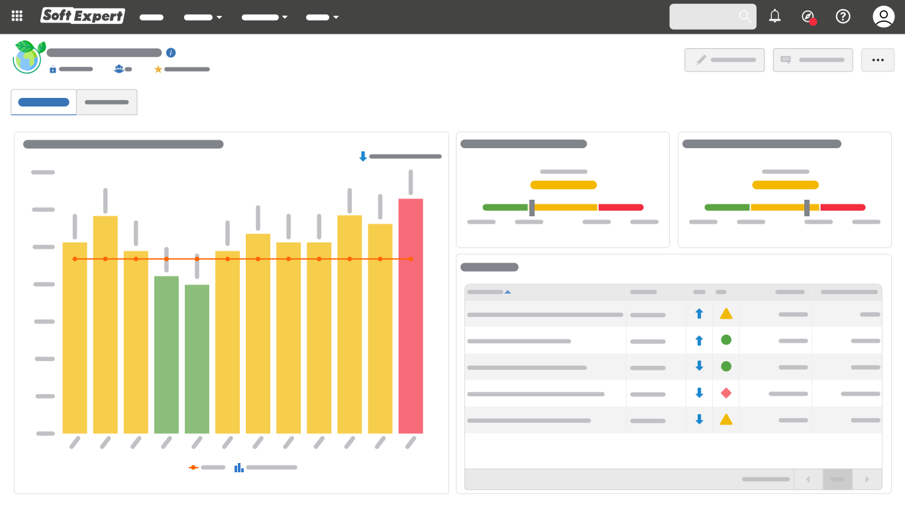
Evita incidentes, reduce costos y garantiza el cumplimiento con un software que integra todos los procesos relacionados con la salud, la seguridad y el medio ambiente.
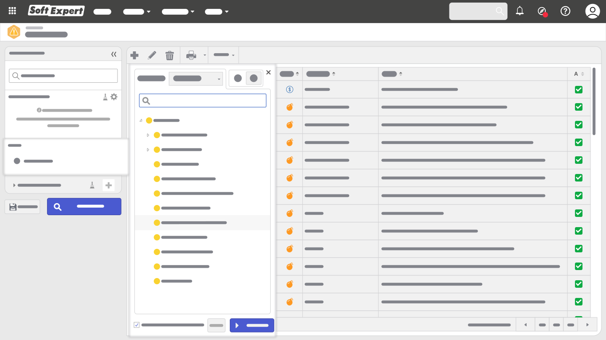
Reduce la probabilidad y la gravedad de los eventos de riesgo en una plataforma integrada que te permite aprovechar oportunidades, optimizar recursos y orientar estrategias y decisiones.
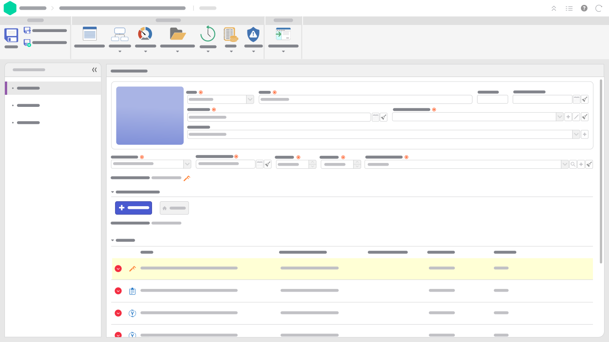
Moderniza tu gestión de activos con planes completos de calibración y mantenimiento que prolongan el ciclo de vida de los equipos, mejoran su confiabilidad y aseguran el cumplimiento de normas como ISO 50001, ISO 55000, ISO 55001 e ISO 17025.
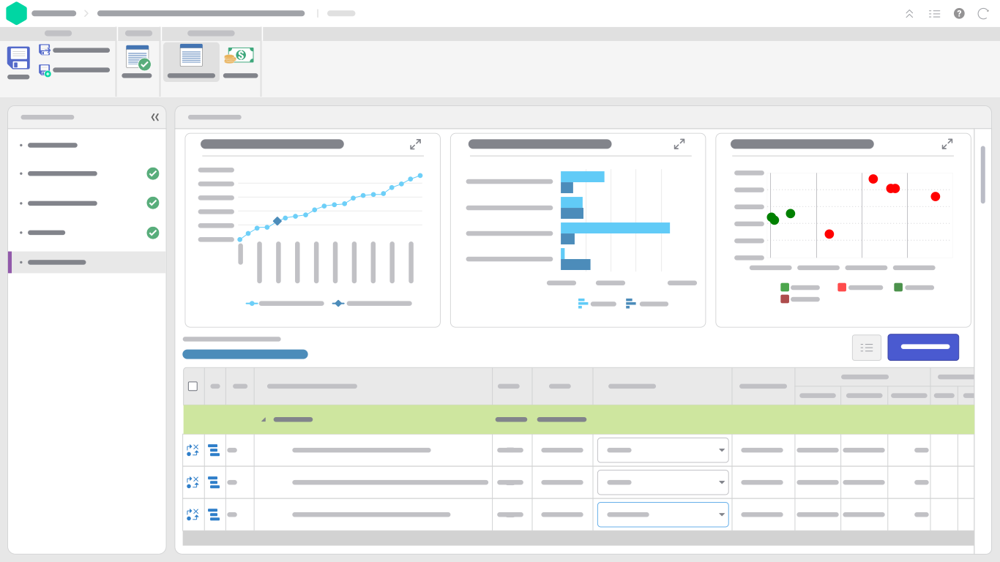
Moderniza y simplifica la gestión de proyectos y portafolios con lo esencial para planificar, ejecutar y supervisar tus proyectos hasta su finalización exitosa, de acuerdo con las pautas del PMBOK.
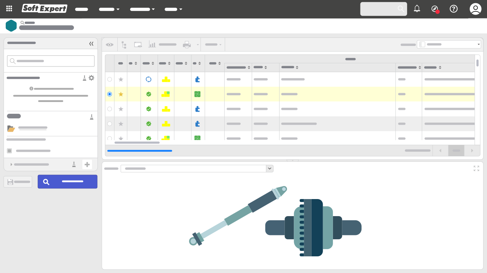
Gestiona el ciclo de vida de tus productos de forma eficaz y rentable en todas sus etapas: concepción, diseño, fabricación, servicios, entrega y seguimiento, en una solución web accesible y fácil de usar.
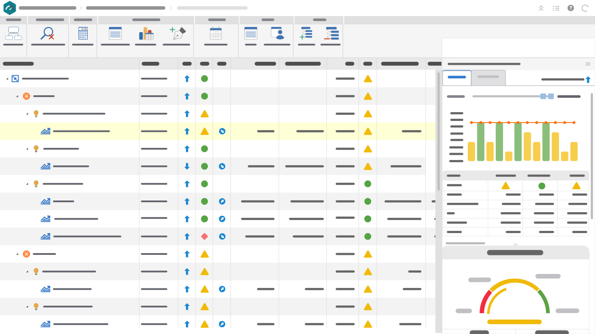
Administra la estrategia mapeando scorecards con objetivos, indicadores, planes de acción y todo lo que necesitas para alcanzar el éxito de tu negocio.
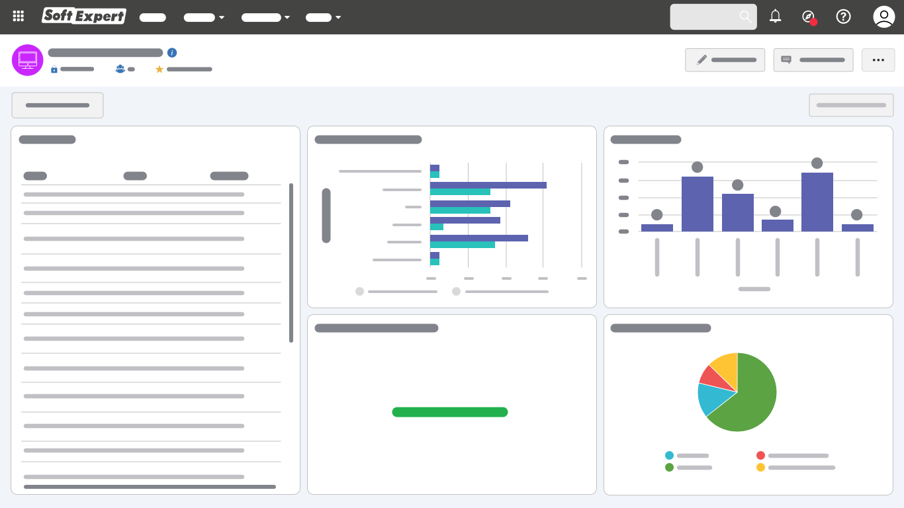
Integra en una única plataforma los procesos de servicio, llamados de TI, gestión de incidentes y problemas, acuerdos de nivel de servicio (SLA), base de conocimiento, gestión de configuración (CMDB) y gestión de cambios.
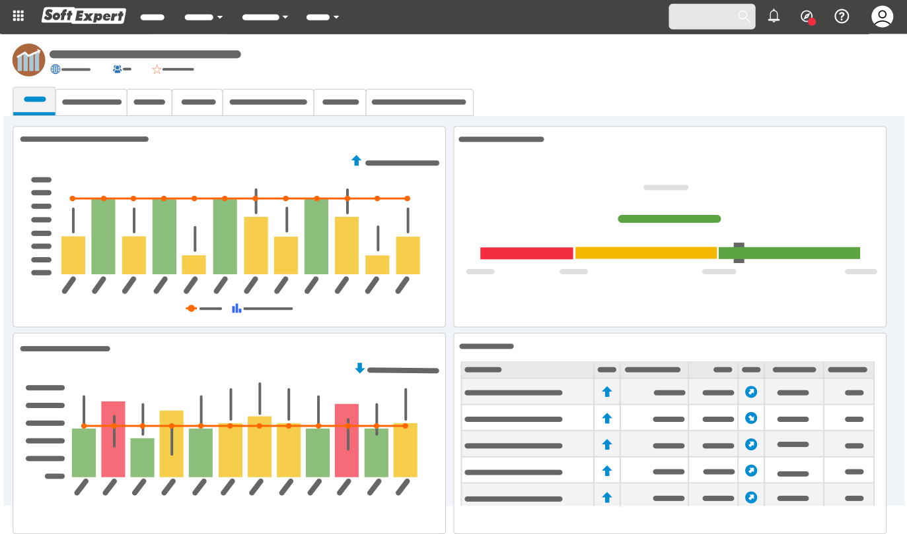
Gestiona tus procesos de cambio, transforma las ideas en resultados e impulsa la innovación y el cambio organizacional en tu empresa con una plataforma completa.
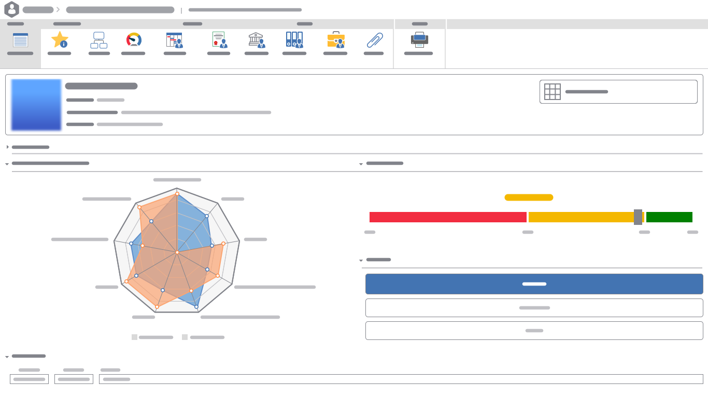
Atiende la gestión del talento, la capacitación y el desarrollo, la evaluación del desempeño de los equipos y la planificación de carrera y sucesión, en una única plataforma.
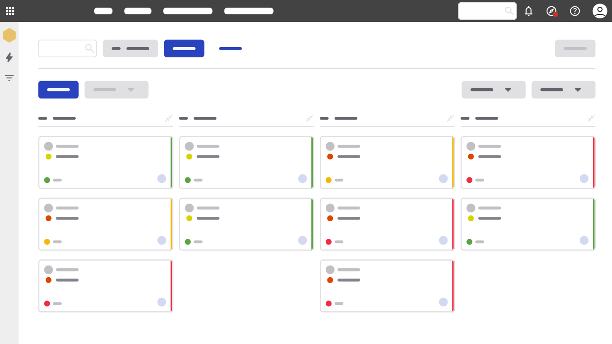
Una plataforma en la nube, todo en uno, para mejorar la colaboración de los equipos y aumentar la eficacia de las tareas.
Cuando necesitas alinearte con ISO 9001, 14001, 45001, 27001 u otras normativas específicas.
Cuando buscas prolongar el ciclo de vida de tus equipos y mejorar su confiabilidad.
Cuando necesitas visibilidad y control sobre los riesgos que enfrenta tu organización.
Cifras publicadas por SoftExpert sobre el alcance global de su plataforma.
Una plataforma integral diseñada para optimizar la gestión empresarial: automatiza procesos, monitorea operaciones en tiempo real, garantiza el cumplimiento normativo y gestiona riesgos.
Se adapta a diversas industrias, incluyendo manufactura, salud, servicios financieros, retail, tecnología, construcción y energía, entre otras.
Sí, está alineado con estándares como ISO 9001, ISO 14001, ISO 45001, ISO 27001 y GDPR.
Sí, cuenta con capacidades de integración con ERPs, CRMs y herramientas de análisis de datos, eliminando silos de información.
Automatiza tareas repetitivas, minimiza errores humanos y centraliza procesos, reduciendo la necesidad de herramientas y recursos adicionales.